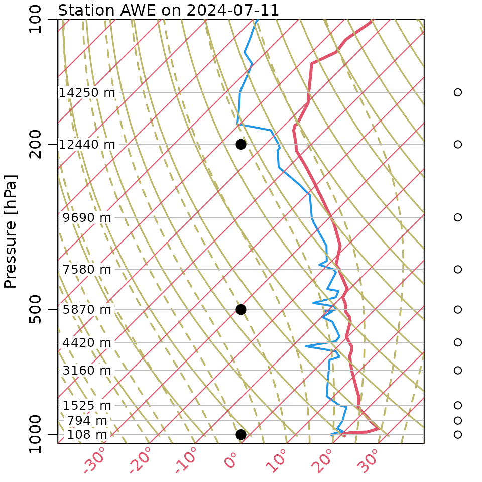

Introduction to the atmospheric Package
Dan Kelley (https://orcid.org/0000-0001-7808-5911)
2024-07-16
Source:vignettes/atmospheric.Rmd
atmospheric.RmdAbstract. This shows how to plot a recent atmospheric sounding at the default location, Shearwater, Nova Scotia, Canada.
Plot a sample sounding for Shearwater, Nova Scotia, Canada.
This example uses a sample data file that is provided in the package, because otherwise building the vignette can yield an error, if the server (Reference 1) is unreachable or is too busy to return files.
There are several errors and deficiencies with this graph, including the following.
- the lines sloping up to the left should be (curved) dry adiabats, but they are erroneously straight because they reflect just the near-surface lapse rate
- wet adiabats should to be added
- water fraction should be added
- wind barbs should be added
- text summaries should be added
library(atmosphere)
#> Loading required package: S7
file <- system.file("extdata", "Shearwater_2024-07-11.txt.gz", package = "atmosphere")
sounding <- readAtmosphericSounding(file)
plot(sounding)
#> TT=20

Skew-T log-P sounding profile at Shearwater, Nova Scotia, Canada, on July 11, 2024. The wider line represents temperature and the thinner line represents dew point. The curves are skewed to the right; to read values, trace the 45 degree lines down to the horizontal axis.
#> pressure height Tdry
#> 1 1008.0 38 19.6291367
#> 2 1000.0 108 18.9459673
#> 3 999.0 117 18.8581313
#> 4 989.0 204 18.0090494
#> 5 986.0 231 17.7455412
#> 6 977.8 305 17.0233337
#> 7 967.0 403 16.0668966
#> 8 944.5 610 14.0466673
#> 9 925.0 794 12.2509080
#> 10 912.3 914 11.0797606
#> 11 880.7 1219 8.1030942
#> 12 858.0 1445 5.8974333
#> 13 850.0 1525 5.1166683
#> 14 820.2 1829 2.1497616
#> 15 808.0 1957 0.9005376
#> 16 791.1 2134 -0.8269048
#> 17 763.0 2438 -3.7938116
#> 18 735.7 2743 -6.7704779
#> 19 700.0 3160 -10.8402151
#> 20 661.0 3632 -15.4467283
#> 21 658.9 3658 -15.7004769
#> 22 650.0 3769 -16.7837882
#> 23 630.0 4024 -19.2724765
#> 24 613.0 4246 -21.4390992
#> 25 611.4 4267 -21.6440500
#> 26 596.0 4474 -23.6642793
#> 27 581.0 4679 -25.6649894
#> 28 566.7 4877 -27.5973827
#> 29 535.0 5337 -32.0867811
#> 30 521.0 5547 -34.1362890
#> 31 506.0 5777 -36.3809882
#> 32 504.0 5808 -36.6835347
#> 33 500.0 5870 -37.2886275
#> 34 499.0 5886 -37.4447805
#> 35 491.0 6012 -38.6744853
#> 36 485.7 6096 -39.4942884
#> 37 482.0 6155 -40.0701026
#> 38 467.0 6400 -42.4611952
#> 39 451.0 6668 -45.0767578
#> 40 448.8 6706 -45.4476211
#> 41 446.0 6754 -45.9160801
#> 42 407.0 7450 -52.7087351
#> 43 400.0 7580 -53.9774781
#> 44 397.9 7620 -54.3678606
#> 45 390.0 7770 -55.8317948
#> 46 382.0 7925 -57.3445269
#> 47 382.0 7924 -57.3347673
#> 48 351.0 8551 -63.4540125
#> 49 323.5 9144 -69.2414327
#> 50 308.0 9502 -72.7353558
#> 51 300.0 9690 -74.5701534
#> 52 265.0 10567 -83.1292890
#> 53 261.2 10668 -84.1150048
#> 54 250.0 10970 -87.0623924
#> 55 227.0 11617 -93.3768289
#> 56 207.9 12192 -98.9885769
#> 57 207.0 12219 -99.2520851
#> 58 204.0 12313 -100.1694839
#> 59 200.0 12440 -101.4089482
#> 60 185.0 12937 -106.2594504
#> 61 180.0 13110 -107.9478546
#> 62 179.0 13145 -108.2894392
#> 63 173.0 13359 -110.3779855
#> 64 163.4 13716 -113.8621490
#> 65 159.0 13888 -115.5407936
#> 66 150.0 14250 -119.0737550
#> 67 148.2 14326 -119.8154817
#> 68 134.1 14935 -125.7590548
#> 69 128.0 15221 -128.5502894
#> 70 127.6 15240 -128.7357211
#> 71 121.4 15545 -131.7123875
#> 72 120.0 15613 -132.3760376
#> 73 112.0 16035 -136.4945727
#> 74 109.8 16154 -137.6559606
#> 75 102.0 16608 -142.0868016